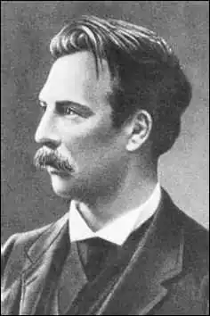
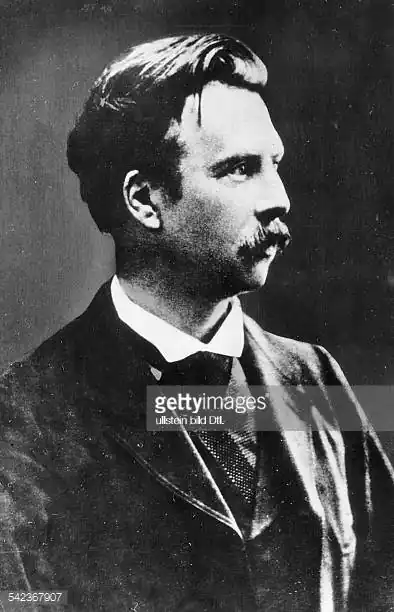

ДЕ КОСТЕР, Шарль (De Coster, Charles — 20.08. 1827, Мюнхен — 07.05.1879, Іксель) — бельгійський письменник.Де Костер — автор знаменитої "Легенди про Уленшпітеля і Ламме Ґудзака, про їхні героїчні, веселі та славетні пригоди у Фландрії та в інших країнах" ("La legende et les aventures heroi'ques, joyeuses et glorieuses d'Ulenspiegel et de Lamme Goedzak au paus de Flandres et ailleurs", 1867). Цю книжку називають "фламандською Біблією", яка заклала основи бельгійської літератури. "Це — перша книжка, в якій наша країна знайшла себе", — писав Е. Верхарн. "Напевно, до створення цієї епопеї більш причетні долі народу, ніж доля однієї людини, — відзначав Р. Роллан у статті "Уленшпіґель". — А правильніше, геніальність цієї людини в тому, що вона змогла стати знаряддям народних доль". У контексті світової літератури "Легенди про Уленшпіґеля "стоять поряд з такими великими книгами, як "Дон Кіхот" М. де Сервантеса, "Ґаргантюа і Пантагрюель" Ф. Рабле, а в бельгійській культурі ім'я її творця ставлять поряд з іменами М. Метерлінка й Е. Верхарна.
Перше, коштовне і чудово проілюстроване Ф. Ропсом та іншими художниками видання роману К. вийшло друком наприкінці 1867 р. Воно не дійшло до широких кіл читачів. Щоправда, його високо оцінили друзі та нечисленні шанувальники Де Костера. Лише після смерті автора, в 1893 p., з'явилося доступніше видання "Легенд", про яке мріяв Де Костер. У криваві роки Першої світової війни роман став усесвітньо відомим. Для Бельгії часів Де Костера його книжка була незвичною, надмірно яскравою, радикальною, сміливою. Потрібно було мати неабияку відвагу, щоб у католицькій країні з такою гостротою картати католицьку церкву, а також прославляти свободу як найбільше добро на землі.
І у своєму житті Де Костер уникав протоптаних стежок, що ведуть у царство пихатої рутини. Він був нащадком стародавнього фламандського роду. Фламандцем був його батько, уродженець Ґента, а матір — валлонкою. Раннє дитинство Костера пройшло у Мюнхені, де його батько займав посаду управителя папського нунція при баварському дворі — архієпископа трірського графа Д'Аржанто. Доброзичливо ставлячись до сім'ї свого підлеглого, граф став хрещеним батьком Шарля, а після смерті рідного батька дитини він опікувався Шарлем і надалі. За його наполяганням хлопця, котрий приїхав у 1833 р. з матір'ю в Брюссель, віддали в єзуїтський колеж Сен-Мішель. Архієпископ і в подальшому був готовий допомагати юнакові та його духовній кар'єрі, але майбутнього автора "Легенд про Уленшпіґеля" така перспектива не приваблювала. Саме в школі, очолюваній єзуїтами, склався його антиклерикалізм, який з роками лише посилювався. Він не захотів проміняти свою духовну незалежність на життєвий добробут. Настали роки злигоднів, розчарувань, упертої праці. Тривалий час Де Костеру довелося працювати конторником у Брюссельському банку (1844-1850). Потім він вступив в університет (1850—1855), закінчивши який міг би стати вчителем, але не захотів забивати голову мертвими мовами. Його вабила література. Проте літературна діяльність не могла врятувати письменника-початківця від злиднів. Заради шматка хліба доводилося хапатись то за одну, то за іншу роботу. З 1860 р. Де Костер працював у Брюссельському королівському архіві, і ця робота принесла йому безсумнівну користь: він познайомився зі старовинними документами, такими необхідними йому для майбутньої літературної праці. Задля заробітку він читав публічні лекції у різних містах, виконував обов'язки секретаря медичного журналу. Злидні переслідували його невідступно. Кредитори не давали йому спокою. Помер Де Костер від туберкульозу. Духовенство відмовилося брати участь у похороні письменника. Але незважаючи на всі злигодні життя, Де Костер наполегливо просувався до поставленої мети. В одному з листів, адресованому коханій, Елізі Спрейт, він заявив: "Як добре, як чудово, коли людини горда й вільна, навіть якщо вона бідна". Гордий бідняк Де Костер залишався чесним і відважним у своєму мистецтві. Саме він вдихнув у бельгійську літературу нове життя, підняв її на недосяжну висоту. Не відразу, проте, підійшов Де Костер до вершин творчості. Розпочав він з того, що спільно з друзями восени 1847 р. заснував літературний гурток, задля осоромлення похмурих філістерів найменований "Товариством веселунів". Члени гуртка, які шукали нових шляхів у літературі, читали свої твори, з котрих найвдаліші потрапляли в рукописний "Журнал". Найкращим із того, що в цей час створив Костер, можна вважати жартівливу промову, написану з нагоди відкриття гуртка. У ній уже прослідковуються волелюбні інтонації Ф. Рабле, котрий став одним із найулюбленіших письменників автора "Легенд про Уленшпіґеля". Впливом Ф. Рабле пояснюється і нестримний мовний потік, з його веселим нагромадженням слів і скоромними жартами. З цієї промови, власне, й розпочалася літературна діяльність Де Костера. З Рабле Де Костеру знову довелося зустрітись у щотижневому журналі "Уленшпігель", який з 1856 р. почала видавати у Брюсселі група прогресивної молоді. На першій сторінці сорокового номера (2 листопада 1856 р.) як епіграф було поміщено девіз, записаний Рабле в уставі Гелемського абатства: "Роби, що хочеш". Цитата з Рабле ніби пов'язувала новий журнал із заповітами ренесансного гуманізму й підкреслювала його незалежний характер. А ім'я Уленшпіґеля — героя старовинної народної фламандської книги, дотепника та жартівника, обіцяло, що журнал цей не буде нудним. Його підзаголовок: "Журнал художніх і літературних забав". У підготовці журналу аж до 1864 р. брав дієву участь Де Костер. Тут публікувалися його твори, тут він проявив себе як чудовий публіцист, котрий відгукувався на події бельгійського та міжнародного життя. Доля Бельгії з її глибокими суперечностями хвилювала його. Країну населяли валлони, які спілкувалися французькою мовою, і фламанці, які говорили фламандською мовою. У середовищі фламанців наростав рух за визнання національних прав цього народу. Де К. співчував фламандському рухові, хоча й був далекий від вузьконаціоналістичної тенденції, що проявлялася у цьому русі. У журналі "Уленшпігель" відбулася вирішальна зустріч Де Костера з героєм його найдовершенішого твору. І справа не лише у назві журналу, для якого Фелісьєн Ропс намалював невтомного мандрівника Уленшпіґеля, котрий насміхається з усього й усіх, а й у тому, що на сторінках журналу Де Костер став мовби двійником Уленшпіґеля. У своїх статтях Де Костер говорить від імені Уленшпіґеля. Але мине ще кілька років, перш ніж під пером Де Костера Уленшпігель вросте у плоть і кров героя монументального роману. Тим часом Де Костер працював над двома книгами: "Фламандські легенди" ("Les legendes flaman-des", 1858) і "Брабантські оповідання" ("Contes brabanfons", 1861). Особливо вдалася авторові перша з цих книг, де ожив химерний світ старовинних народних легенд — яскравих, сильних, інколи зворушливо наївних або ж круто замішаних на ярмарковому комізмі. Водночас "Фламандським легендам "притаманні достатньо конкретні соціально-історичні прикмети, які одразу ж уводять казкову оповідь у великий реальний світ. У "Фламандських легендах", написаних французькою мовою XVI ст., якої Де Костер навчався у Рабле і М. де Монтеня, використані окремі прийоми, характерні для раблезіанської манери, що було вже тим шляхом, який прямо вів Де Костера до "Легенд про Уленшпіґеля". Особливо прикметне в цьому плані розлоге фабліо про Сметса Смея, що завершує книжку. Ми дізнаємося, що герой оповідання разом із тезами боровся за визволення Фландрії, що його за це недолюблювали вельможні та маєтні міщани, котрі дружили з іспанцями, що він відплачував зрадникам тією ж самою монетою, пристрасно ненавидів гнобителів батьківщини. "Брабантські оповідання" — книга іншого ґатунку. Присвячена вона сучасникам письменника, їхнім радощам і бідам. В оповіданнях багато такого, що зближує їх з "Легендами про Уленшпіґеля". Перш за все — це притаманний оповіданням демократичний дух. Симпатії автора на боці селян, робітників, художників, музикантів, поетів, тобто "всіх, хто працює руками і головою". У книгу бурхливим потоком вривається сатира, що змушує згадати Еразма Роттердамського, Дж. Свіфта і, звичайно, Рабле. І ось у грудні 1867 р. вийшли друком "Легенди про Уленшпіґеля", що прославили бельгійську літературу і стали знаменним явищем усієї світової літератури.Створюючи національний епос Бельгії, Де Костер звернувся до найгероїчнішого періоду її історії, до того часу, коли нідерландський народ у XVI ст. піднявся на боротьбу супроти іспанських гнобителів за свою свободу. Було б помилковим твердити, що до Де Костера жоден з бельгійських письменників не звертався до вітчизняної старовини (історичні романи А. Мока та ін.). Але їхнім творам, як і всій бельгійській літературі першої половини XIX ст., не вистачало міцних м'язів і гарячої крові, не вистачало народної сили. Як і інші історичні романісти, Де К. вивчав документи епохи, уважно знайомився з працями істориків, але писав він все ж таки не традиційний роман. Він творив "легенду", що підкреслює сама назва книги. До жанру легенди він звертався і раніше ("Фламандські легенди"), лише масштаби тут зовсім інші. Якщо "Фламандські легенди" можна порівняти зі старовинними книжковими мініатюрами, то "Уленшпігель" — це грандіозний різнокольоровий вітраж. Грандіозність "Уленшпіґеля" —в його епічному розвої. Це книга про долі народу, про його справедливу і важку боротьбу. Легенду створює народ. У легенді він зберігає найдорожчі свої спогади. "Легенда про Уленшпіґеля" не належить цілковито Шарлю Де Костеру, це народний епос, або народна книга, яка лише увібрала видатні досягнення романтичної та реалістичної літератури, її головний герой, легендарний Тіль Уленшпігель зі старовинної народної легенди, наче вихор, вривається в реальну історію. На сторінках дивовижного роману Де Костера життя стає легендою, а легенда — пророчим попередженням і бойовим гаслом, зверненим до сучасників. Нідерланди XVI ст. Життя країни перетворене у суцільне пекло іспанськими завойовниками та їхньою опорою — католицькою церквою. Героїка народної боротьби і протесту створює атмосферу роману.